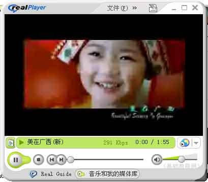
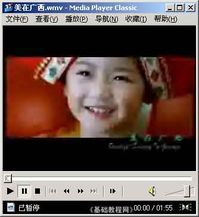

抓图基础入门教程
五、捕捉视频图像 返回
视频是指RM、WMV等既有图像又有声音的文件，由于视频格式压缩比较特殊，因此捕捉上有些难度，下面我们来看一个练习；
1、运行软件
1）点击桌面上的“红蜻蜓抓图”图标，自动缩小到任务栏中；
2）捕捉方法是按组合键 Ctrl＋J （按住Ctrl键不松，再按一下字母J，然后再松开两个）就可以开始捕捉，
出来一个红线圈住的方框，这就是捕捉区域了，点左键捕捉，点右键退出；
2、捕捉视频图像
1）一般电脑中都装有两个以上的播放器，比如WMP、Realplayer、暴风影音等，
找到一个视频文件，先用一个播放器打开它，播放一些后，点“暂停”；

2）再打开另一个播放器，也播放这个同样的文件，找到位置后点“暂停”

3）然后按组合键 Ctrl＋J 开始捕捉，把鼠标移到第二个播放器上，点左键确定捕捉；
4）捕捉的原理是，视频加速一般在第一个播放器中，第二个播放器不会加速，因此可以捕捉到图像；
本节学习了捕捉视频图像的基本方法，如果你成功地完成了练习，请继续学习下一课内容；
本教程由86团学校TeliuTe制作|著作权所有
基础教程网：http://teliute.org/
美丽的校园……
转载和引用本站内容，请保留版权信息和本站链接。